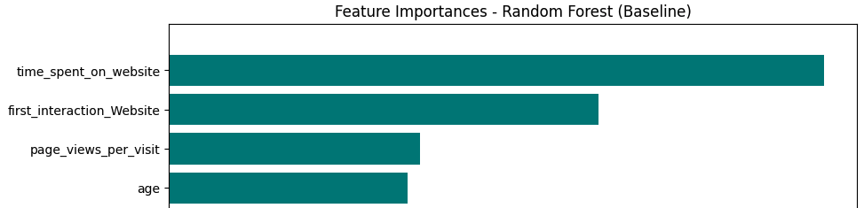

Potential Customers Prediction

Resumen del proyecto
En la industria EdTech captar clientes es caro, y no todos los que llegan terminan comprando. La empresa ExtraaLearn necesitaba una forma de saber cuáles de sus leads tenían más chances de convertirse en clientes pagos, para no gastar recursos en los que probablemente no iban a comprar. Ese era el desafío: armar un modelo que pudiera predecir la conversión.
Este proyecto lo hice dentro del programa de MIT IDSS, en el módulo de Classification and Hypothesis Testing. Tenía datos sobre los leads: cuánto tiempo pasaban en el sitio, cuántas páginas visitaban, cómo los habían contactado y si finalmente compraron o no.
Probé cuatro modelos: un Decision Tree básico, uno con poda, un Random Forest básico y uno ajustado con Grid Search. La idea era maximizar el recall, porque para la empresa era más importante detectar todos los posibles compradores que evitar algún falso positivo.
El mejor modelo fue el Random Forest ajustado: logró detectar el 86% de los leads que realmente compraron, con un accuracy del 83%. Lo más interesante fue ver que el tiempo en el sitio web y la primera interacción online eran los factores más determinantes. Es decir, si alguien pasa tiempo navegando y llegó por la web, tiene muchas más chances de comprar.